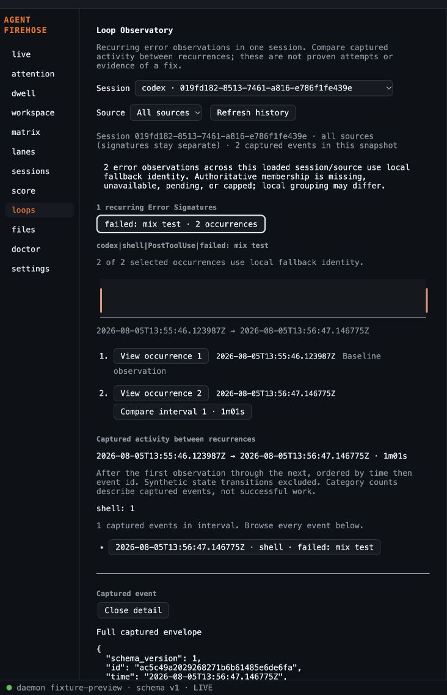
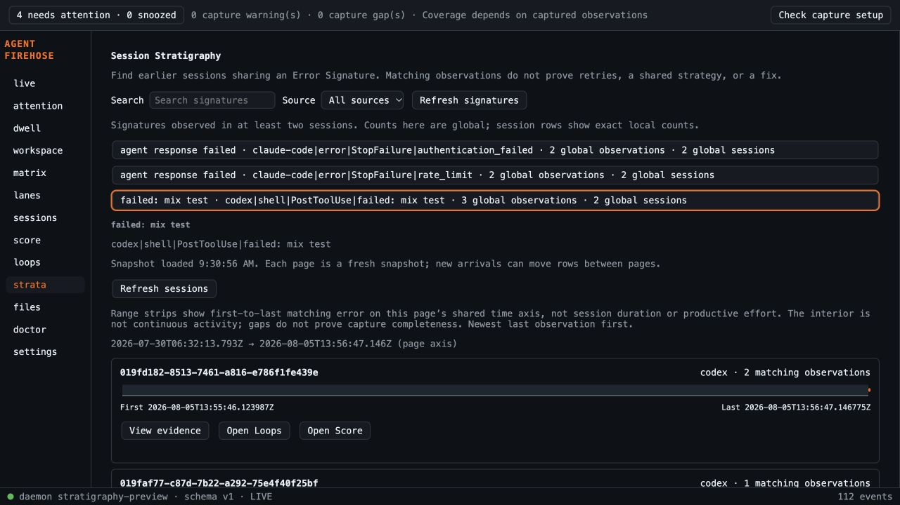
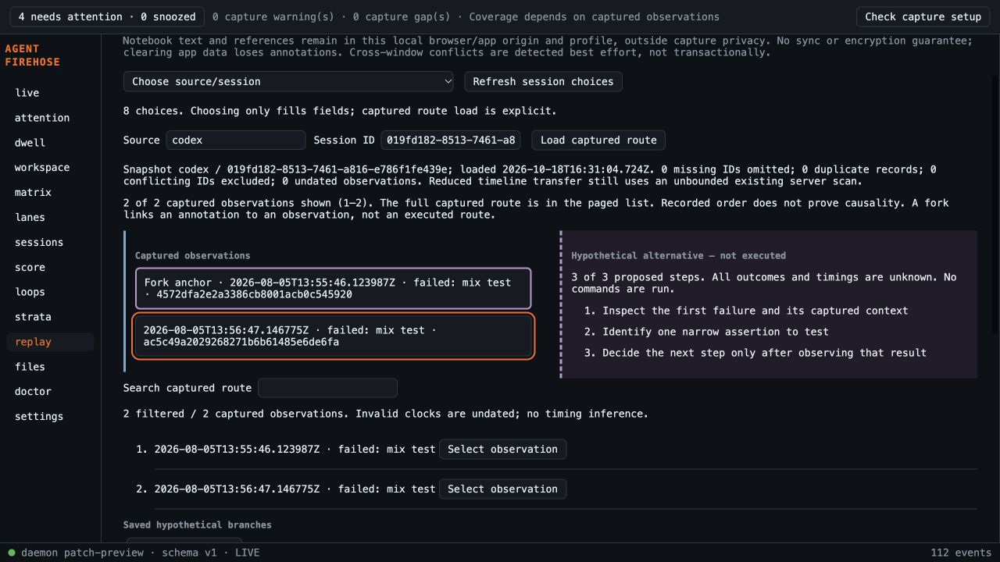
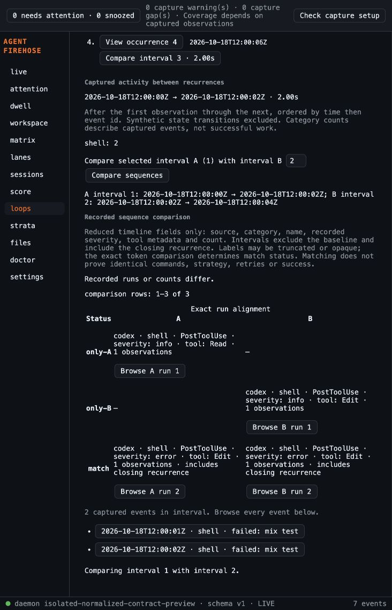
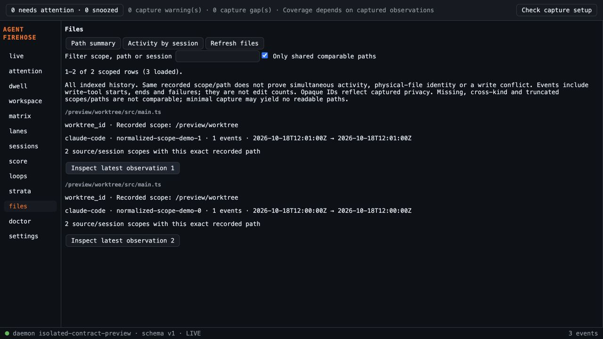
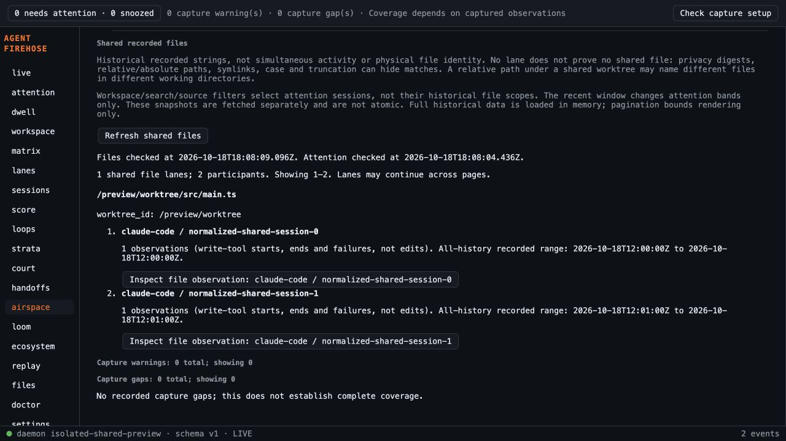

LOCAL FIRST · COORDINATION JOURNAL · 18 OCTOBER 2026
From planned concepts to working prototypes
Each slice starts from the latest fetched main, gets a bounded plan, test-first implementation, adversarial review, automatic repairs, validation and a pull request. Main merges remain human-approved. This journal records decisions, evidence and unresolved gates; it does not equate a mockup with working software.
Completed slice: Loop Observatory
Loop Observatory v1 — build plan. Base a150daa16408e6578467ceb1d196cb07022751b2; branch codex/loop-observatory-prototype. Fresh isolated worktree; unrelated untracked brainstorms in the primary checkout are preserved.
Completed slice: Session Stratigraphy
Fresh worktree from main a5df67fc5cce0e66130f055e0d8a038f4ad42c17, branch codex/session-stratigraphy-prototype. Plan; implementation, local validation and final reviews complete. PR #36 merged as e007b2f after explicit approval and all platform checks passed.
Delivered slice: Evidence Court
Fresh worktree from e007b2f, branch codex/evidence-court-prototype. Plan: manual claims, requested evidence and explicit captured receipts. Implementation and reviews complete; PR #37 passed hosted checks on 346524b and awaits human merge approval.
Delivered slice: Handoff Subway
Fresh worktree from latest main e007b2f, branch codex/handoff-subway-prototype. Plan: explicit annotated links between captured references, a bounded transit map and receipt inspection. Implementation and local validation complete; independent reviews passed after fixing the stream-only transition picker bug in e32cd52. PR #38 is open; exact head 1f537f8 passed all hosted platform checks (run39142134788). Bounded Argon 4 High final review passed 048a803; follow-up on e32cd52 passed and independently reran all529 frontend tests/build.
Delivered slice: Attention Airspace
Independent fresh worktree from latest main e007b2f, branch codex/attention-airspace-prototype. Plan: source-scoped observation bands, captured request age, exact receipts and offline/stale labeling. Implementation and local validation complete; independent standards/spec reviews passed after paging fix 8014bfd; Argon4 High initial and fix follow-up reviews passed. PR #39 is open at 5f7da85545323d06112ca94870ab817dc6b3eeaf; all hosted platform checks passed (run39143136486); merge remains human-approved.
Delivered slice: Causal Loom
Fresh isolated worktree from latest main e007b2f, branch codex/causal-loom-prototype. Plan: inspect captured observations through exact native identifier groups and supported parent-message references. This slice is independent of unmerged PRs #37, #38 and #39; their evidence is linked at immutable commits without importing their application code. Implementation, full local validation and final reviews complete; PR #40 is open. Three hosted findings were fixed and resolved; all hosted platform checks passed for exact head 942800d0cc013702a8cde6748c8d76c08b918ebe in run 39144842907. Merge remains human-approved.
Delivered slice: Patch Ecosystem
PR #41 is ready and unmerged at 8fa454a. Sonnet5.5 High initial and follow-up reviews passed after fixes; all hosted platform checks passed in39147671951. Included in the combined prototype branch. Validation evidence.
Delivered slice: Forked Replay Lab
PR #42 is ready and unmerged at 9e34934. Sonnet5.5 High reviews and hosted platform checks passed (39147650642). Included in the combined branch.
Current combined prototype
PR #43 includes shared-file Airspace and cooperative history cancellation at code 9b72c66:750 frontend tests across58 files and production build pass, with full Go/CLI/sidecar/Rust3 evidence. Requested-model and independent reviews pass after fixes. PR #47 was integrated into this branch and GitHub marks it merged; it has not merged into main. Updated platform checks remain running. See D80 and the coverage audit for current limits; numbered decisions below preserve historical checkpoints.
Delivered slice: File-linked Activity errors
PR #44 is ready and unmerged at e7c191f. Sonnet5.5 High review and hosted platform checks passed (39148196670). Included in the combined branch.
Backlog map
| Slice / surface | Current evidence | Next decision or gate |
|---|
| Session Score, Activity Map | Existing desktop prototypes on main | File-linked recurrence overlay implemented and reviewed. Activity overlay PR #44 passed requested-model review and hosted checks. Loop sequence PR #45 passed updated hosted checks at8ebb37c in39150364094 and is integrated. |
| Session timeline and projection performance | PRs #33 and #34 merged October 17 | Prerequisites satisfied. |
| Loop Observatory | Working browser prototype; PR #35 (merged) | Recurrence inspection; avoid unsupported retry or cause claims. |
| Attention inference, notifications, collision | Existing attention foundation; follow-ups planned | Define useful recurrence thresholds and evidence before automatic inference. |
| Session Stratigraphy | Working prototype in PR #36 | Cross-session Error Signature history and evidence. |
| Evidence Court | Working prototype in PR #37 | Manual claims and receipts first; never infer universal correctness. |
| Handoff Subway | Working prototype in PR #38 | Explicit user annotations; source-confirmed joins deferred. |
| Causal Loom | Delivered in PR #40; all platform checks passed | Exact source/session groups and supported native parent references; no root-cause inference. |
| Attention Airspace | Delivered in PR #39; all hosted platform checks passed | Human merge approval remains; source/capture clocks stay separate. |
| Patch Ecosystem | PR #41; unmerged; requested final review and platform CI passed | Observed file activity and exact receipts; no inferred reversions or code-quality metric. |
| Forked Replay Lab | Ready PR #42; all platform checks passed | Keep hypothetical annotations visibly separate from observed outcomes. |
| Adapter expansion, cloud and release gates | Separate prerequisites | Real captured adapter fixtures; no cloud scope or signing assumptions. |
Decision log
D01 — Continue the established order.The older coordinator selected timeline → projection performance → Loop Observatory. Both prerequisites are now verified merged, so the next slice is a usable recurrence inspector. “All apps” is interpreted as the product surfaces in this repository; concepts remain explicitly unimplemented until their own gates pass.
D02 — Review with the requested model.agy models confirms gemini-4-argon-high. Use Argon 4 High for plan and final diff reviews; Claude Sonnet 5.5 High is the fallback if invocation fails. Review reports retain model identity and scope.
D03 — Reuse existing contracts.Timeline events and session-scoped Error Signature membership supply the prototype. No new endpoint, persistent state, dependency or privacy semantics. Existing spool history remains canonical.
D04 — Honest recurrence language.Repeated observations are not necessarily independent retries: a call may emit multiple errors. Compare captured categories between consecutive occurrences, preserve gaps, and disclose identity fallback. Global signature counts are never presented as session counts.
D05 — Test boundaries and bounded rendering.The user delegated routine decisions. Public pure derivation and observable DOM/API interactions are the selected TDD seams. Use existing captured fixtures, deterministic ordering, local counts, stale response tests and explicit rendering limits.
D06 — Completion and autonomy.Fix actionable review and CI failures on this branch. Do not merge main without human approval. This request authorizes the present workflow; no recurring automation is created. A subsequent dependent slice starts after merge or with an explicitly documented stacked base.
D07 — Fallback reviewer after timeout.Argon 4 High headless review first encountered a tool-permission denial, then the read-only retry timed out after four minutes without a verdict. This is not approval. The requested Claude Sonnet 5.5 High fallback is reviewing the plan and current implementation together. Implementation proceeded while this external gate remained open.
D08 — Cancel expensive stale reads.Version guards protect displayed state; also abort obsolete session-history fetches when selection changes so the daemon can cancel abandoned spool scans. Full event details remain explicitly selected and owned by this view.
D09 — Apply adversarial findings before PR readiness.Sonnet initial review found a loading/error state overwrite through the source selector. Fix it with an explicit phase guard. Also disclose invalid timestamps and duplicate removal accurately, cache parsed times, show per-group fallback counts, preserve valid selections after late membership, and paginate interval evidence. Duplicate removal is not missing evidence; invalid times may understate recurrence counts.
D10 — Fixed-code review and closure.Claude Sonnet 5.5 High passed code commit 85444e9 after rechecking all six findings. Separate standards and specification reviewers found no actionable code defects. Retain their stated limits. The PR Autofix checkbox accepted the update initially but was reset by the service because Carrot credits or Agent usage billing are required. Direct in-session repairs remain authorized. Never treat a skipped review or queued CI job as a pass.
D11 — Merge #35 with explicit human authorization.On October 18, the user requested the merge. Verified exact head e0f8757, clean mergeability, all platform checks and CodeRabbit green, and no unresolved review threads. Merged as a5df67f; unrelated primary-checkout files preserved.
D12 — Build historical lookup before automatic inference.Session Stratigraphy is the next meaningful prototype. Matching authoritative signatures across sessions makes old evidence discoverable; automatic loop inference would require unvalidated intervention thresholds. Attention notifications already exist, so they are not new prototype work.
D13 — Exact per-session counts beyond sample limits.Add a read-only paginated endpoint over disposable per-signature/session aggregates. Existing 500-member arrays are samples and cannot supply exact per-session counts or last observation times. Preserve existing responses; document the additive route before code. Anonymous error observations stay in global totals but cannot produce a session row.
D14 — Snapshot pagination and honest time ranges.Each page reflects a fresh projection snapshot; live arrivals can move rows. The view offers refresh and explains this. Time bars represent first-to-last matching error, not session duration or effort. Full event evidence loads only on explicit selection.
D15 — Review query parsing and distinguish identities.Argon timed out after three minutes without a verdict; the requested Sonnet 5.5 High fallback found malformed query parsing could silently use defaults. Reject parse errors before querying, use fixed missing-key messages, and regression-test invalid pagination. The browser check also found two real error classes sharing a summary: display the authoritative key to distinguish them.
D16 — Preserve established signature identity.The existing unescaped delimiter key can be ambiguous for unusual names/classes. This slice uses the established identity consistently; changing it would alter a frozen surface and needs a separate compatibility design. No claim of semantic equivalence or causality is added.
D17 — Final review and handoff.Sonnet 5.5 High passed immutable code commit 620e9c3, confirming all initial remediations. Standards and spec reviewers also passed. Advisory notes: projection relies on admission-generated IDs (tested), accepted leading-zero pagination lacks a dedicated positive test, and extreme zoom/long source labels may crowd fixed-height rows. No blocker identified; packaged UI interaction remains unverified. PR #36 is the deliverable. Autofix was requested again and the service explicitly required credits/billing; direct repairs continue, with no billing change authorized. CodeRabbit also skipped the ready PR because the included hourly review limit was reached; its green skipped status is not a review pass. The requested Sonnet review and independent reviews did complete.
D18 — Merge #36 with explicit approval.Verified exact head fcf117e, clean mergeability, Go and all platform builds green, and no unresolved review threads. CodeRabbit had skipped for capacity (not approval); requested Sonnet review passed. User authorized merge; resulting main e007b2f.
D19 — Evidence Court begins with manual claims.Build a useful receipt notebook before automated claim extraction or verdicts. Attachments remain explicit user associations. Missing receipts stay visible gaps; a green test observation never proves universal correctness.
D20 — Keep notes separate from captured history.Use a bounded versioned local UI notebook storing manual text and event identities only. Never copy payloads into storage, spool notes, export them as captured evidence, or silently overwrite invalid/future data. Failed saves and stale cross-window writes remain visible. Clearing app data loses notes; no sync or cloud.
D21 — Make receipt attachment and recovery explicit.Argon timed out after two minutes; Sonnet found target ambiguity, silent replacement and loss of preview on failed save. Require explicit requirement selection and display the saved claim/requirement at attachment. Existing receipts must be removed explicitly before replacement; removal uses target-named confirmation. Preserve drafts across selection changes and retain failed-save previews. Invalid/future storage offers read-only raw JSON recovery without automatic deletion. Development and release origins have separate notebooks.
D22 — Final Evidence Court review and handoff.Sonnet passed f3e46c0 after verifying all initial fixes and rerunning the full frontend suite from an archived commit. Independent standards and spec reviews passed. Remaining advisory test-coverage/copy notes are retained in the report. The handoff applies to the shared Live/Score drawer; graph inspector integration is a future enhancement. Creating an item selects it intentionally; reload/handoff never silently selects a receipt target. PR #37 remains unmerged. Next candidate: Handoff Subway with explicit connections, never inferred causality.
D23 — Apply hosted review feedback.CodeRabbit completed a review of PR #37 and found one actionable copy issue: a failed new lookup referred to a saved receipt. Added a failing regression, then made the message distinguish a new lookup (nothing attached) from an existing conflicting reference. Recovery now reuses the exported storage-key constant. Autofix was requested again but required credits/billing; repairs were applied directly. Relevant notebook/panel tests and production build passed. Sonnet follow-up passed code fix d1455bc; final CI tracked on the PR.
D24 — Continue independently from latest main.PR #37 is green but unmerged; no merge approval was granted. Handoff Subway starts independently from main e007b2f. Prior Court decision records link to its immutable PR commit, without importing its implementation.
D25 — Annotate transfers explicitly.Native parent_id may identify records, messages or sessions, so generic event-ID joins would invent relationships. Use user-labelled cross-session references with explicit receipt lookups, a recent-buffer picker and page-bounded map. Layout is not chronology; annotations are not captured transfer facts.
D26 — Keep recent candidates retrievable.Independent spec review found live-only transition frames in FeedState. Filter those synthetic status messages before the latest100 limit; they are not captured receipts. Standards review passed. Requested-model review remains open after timeout/quota; neither failure counts as approval.
D27 — Close requested-model review with bounded scope.Argon 4 High passed initial code048a803 and the picker fixe32cd52; follow-up independently reran529 frontend tests/build. Independent standards/spec reviews passed. Earlier timeout/quota are retained as failed attempts, not verdicts. PR38 leaves draft; hosted checks remain separate and merge needs human approval. Autofix requires credits/billing, so authorized direct fixes remain the path.
D28 — Airspace describes observations.Use the source/session-scoped attention projection, not legacy native-ID-only sessions. Pending requests/failures never age out. Completion includes turn completion; quiet is lack of recent observations. Neither proves process status. Snapshot and evidence timestamps stay distinct.
D29 — Do not invent missing data.Defer shared-file overlap because file summaries lack session identity; defer trails because attention snapshot has latest observations only. Provide bounded band markers, accessible list, explicit receipt lookup, uncertainty and stale/offline state. Nonpending latest receipts may differ from the state-setting event.
D30 — Keep snapshot paging stable.Independent spec review found page changes re-evaluated time and could move sessions across band/page boundaries. Freeze evaluation time across pages; only refresh or local filter/window changes recalculate it. Regression advances the clock across a threshold before paging. Standards review passed; external review remains separate.
D31 — Airspace review closed.Argon4 High passed code79a0cec and paging fix8014bfd. Standards/spec reviews passed;513 frontend tests/build and actual-daemon browser checks supply local evidence. Shared-file overlap and activity trails remain explicitly deferred for missing data. No source semantics changed and no merge is automatic.
D32 — Continue independently while prior PRs await merge.Causal Loom starts from main e007b2f in its own worktree. PR #38 passed its hosted checks; PR #39 CI is still running. Neither is merged automatically. Airspace plan, reviews and screenshot link to immutable head 5f7da85545323d06112ca94870ab817dc6b3eeaf; no unmerged application code is imported.
D33 — Scope first, then join typed native identities.Filter every observation by exact source and session before deduplication or relationship derivation. Call, turn, prompt, message, trace and request identifiers occupy separate namespaces, even when their strings match. Group membership is association, not chronology, causality, a proven start/end pair or root cause. Neighborhoods follow only one hop.
D34 — Support directed references only where captured fixtures prove the contract.Only OpenCode message.updated observations with message_id and parent_id create a native parent-message reference. The parent identifies a message group, never a captured-event ID. Missing parents remain visible zero-member groups; distinct multiple parents and self-references are conflicting. Generic parent/upstream identifiers remain metadata with an unsupported-reference count. Terminal-only tool observations establish membership without implying missing capture or a running process.
D35 — Add correlation metadata without changing established views.The optional view=correlation session response extends the timeline allowlist with captured correlation identifiers and clock/provenance metadata. Default/full and timeline semantics remain unchanged; raw data, paths and arbitrary payload bodies are excluded. Existing privacy-processed allowlist values remain as stored. Real OpenCode fixtures are normalized by the production adapter; existing real Codex receipts supply call/turn evidence.
D36 — Exclude ambiguous captured IDs rather than choose a receipt.Exact duplicate IDs collapse deterministically and report extra-record counts. When records with the same captured ID disagree, exclude that ID entirely from display and relationships and count the conflicting ID. Count missing IDs separately. Invalid clocks remain inspectable and explicitly marked; ordering never supplies an inferred relationship.
D37 — Distinguish client cancellation from server scan bounds.Correlation projection reduces transferred fields and bounded rendering limits visible nodes; neither bounds the existing session-history scan or total loaded metadata. Client aborts and version guards invalidate stale requests and display. The current Session API does not carry cancellation context through its scan, so this slice makes no server-scan cancellation claim. This qualifies the stronger historical wording in D08.
D38 — Make every displayed relationship and receipt explicit and reachable.Loading relationships requires an explicit exact scope; choosing a recent attention tuple only fills the fields. Observation and member lists page at 40; group and parent-reference lists page at 20, with a bounded visual and honest counts. Only Inspect captured receipt fetches a full event, whose captured ID, source and session must match. Scope edits, focus/filter changes and navigation invalidate obsolete details. Missing receipts remain gaps, not verification; no annotations, persistence or background crawl are added. Local validation, browser proof and final adversarial/independent reviews remain pending.
D39 — Close the shared receipt pane when entering Loom.Standards found stale open sidebar state. Regression failed first; 0702228 uses the established close path. All 515 tests/build, standards follow-up and Argon follow-up passed; browser confirmed closure.
D40 — Continue with independent file-activity replay.Patch Ecosystem starts from main e007b2f; Court, Subway, Airspace and Loom remain separate unmerged PRs. PR #39 is green; PR #40 CI is running. Link prior work at immutable commits without importing its application code.
D41 — Display observed paths, not canonical files or edit counts.Filter exact source/session before deriving file activity. Use readable file_path/path/file strings or changes-map keys; skip privacy digests. Group by exact path plus the captured workspace identity, without path normalization or cross-session merging. Every quantity counts observations, not changed lines or independent edits.
D42 — Keep replay honest about clocks and outcomes.Valid event time then captured ID determines replay order. Undated and unknown-path observations remain inspectable separately. Failed status wins; a start observation remains an attempt even if native status says completed. Source-reported completion does not verify final contents. Reversions and net content changes are unavailable.
D43 — Bound rendering without claiming bounded history reads.Explicitly load one full session history because timeline omits paths. The existing server scan and total history transfer remain unbounded; no automatic per-session fanout. Render 20 stable beds per page, at most 20 markers per bed, with separately paged accessible receipts. Replay advances one observation every 250 ms, not wall time.
D44 — Preserve actual fixture provenance.The real Score session supplies Claude Edit/Write observations; the real Codex patch_apply_end record in activity_real_shapes.ndjson supplies a changes-map example. Existing multipath patch-text fixtures are unsupported by this v1 path extractor and must count as missing paths. Synthetic normalized projection cases may test multipath/digest boundaries, but no raw adapter shapes are invented.
D45 — Validate before publishing.Use test-first model, UI and bounded-map seams; requested-model adversarial review, independent standards/spec review, fixes and full local gates precede PR readiness. Actual-daemon browser checks use an isolated temporary spool. Hosted checks and human main-merge approval remain distinct gates. Current slice evidence is pending.
D48 — Continue independent work while review quotas recover.Forked Replay Lab starts from main e007b2f, without importing unmerged PRs #37–41. Loom hosted findings are fixed and resolved at 942800d, with CI restarted. Patch remains draft at 26ff2a0; requested Sonnet final review is pending quota recovery around 18:01 UTC. Quota unavailability is never a pass.
D49 — A hypothetical branch never executes.Require an explicitly fetched, identity-verified captured anchor before creating a branch. Store manual alternative steps with unknown outcomes and timing. No command execution, predicted success, fabricated receipts, inferred cause, or writes to captured history. Reopened saved references are not automatically verified.
D50 — Separate local notes from captured evidence.Use versioned app-local storage agentfirehose.replay.v1 for titles, steps and exact identity references only. Maximum 50 branches, 12 nonempty steps per branch, 120-character titles, 500-character steps, 1024-character reference IDs and a 512 KiB document budget. Validate strict shape and unique branch IDs. No raw events, path/summary snapshots, sync or encryption guarantee; capture privacy does not govern these notes.
D51 — Preserve corrupt documents and concurrent changes.Invalid, future-version, oversized or inaccessible storage is read-only with a visible error. Compare the original raw value immediately before a write; reject stale writes without replacing another window’s document. Failed writes preserve prior storage and unsaved edits. This is optimistic best-effort storage, not a transaction; no silent reset or delete-all action.
D52 — Dirty edits survive navigation and refresh.Do not replace an unsaved form when refreshing, opening a saved branch, changing capture scope or navigating away. Require explicit Discard edits before replacement. Save success is shown only after persistence succeeds; edits clear old success messages. Individual branch deletion requires explicit confirmation and clears the editor only after a successful write.
D53 — Keep observed and hypothetical routes visibly separate.Explicitly load one exact source/session timeline, acknowledging the unbounded existing history scan. Render at most 20 captured nodes and 12 hypothetical steps in distinct lanes, with paged full-route access. Deduplicate exact IDs, exclude conflicting records, label undated observations, and never substitute nearby evidence for a missing saved anchor. Cancel obsolete reads and verify full receipt identity before JSON or Score navigation.
D56 — Preserve review history while assembling one app.Local merge commits combine PR37 346524b, PR38 1f537f8, PR39 5f7da85, PR40 942800d, PR41 26ff2a0 and PR42 5d2f3f6 from main e007b2f. Keep originals open and retain their tests and review reports. Main remains unchanged.
D57 — Verify shared-shell lifecycle.Two new failing integration tests showed Court retained an unrelated shared receipt on entry and did not cancel its pending lookup on exit. Use existing refresh cancellation on exit, clear shared detail on entry and preserve drafts. Both tests now pass. Make the expanded sidebar independently scrollable so all views remain reachable in short windows.
D58 — Add recurrence without changing Heat.Use canonical Error Signature identity and explicit paths on the error observation itself. Keep separate additive error_paths buckets and preserve Heat geometry/counts. Include error-only paths in a separate accessible list. Never attribute a shell failure to a nearby edit.
D59 — Bound output and disclose partial recurrence.Retain 2000 error paths and20 signatures per path, deterministic count/key ordering with omission counts. Exact retained bucket counts support brush-dependent recurrence; response caps do not bound scan memory. Dedupe path aliases resolving to one file so one observation cannot fabricate recurrence.
D60 — Label validation evidence honestly.491 frontend tests, TypeScript/Vite, full Go gates, CLI/sidecar and3 Rust tests passed on4ba6787. Independent reviews passed. Browser exercised real daemon code with normalized contract mutations of existing captured fixtures, not newly captured adapter failures. Requested external review and hosted CI remain pending; no unsupported source capability is claimed.
D61 — Audit prototype coverage without claiming the full vision.Ten-concept coverage audit maps implemented behavior, verification seams and remaining features. All ten have executable prototype surfaces, but requested external reviews, updated CI and human merge approval remain open. Source-confirmed cross-agent links, shared-file attention and richer sequence comparison remain substantive follow-ups.
Validation and review evidence
Local gates passed: Go formatting, vet and full suite; all 476 frontend tests across 31 files; TypeScript and Vite production build; sidecar build and 3 Rust tests.
Browser verified: navigation, real recurring-error fixture, interval counts, full event lookup, source switch and nonrecurring history. This is browser evidence; a packaged native UI was not interactively tested.
Validation and independent standards/spec reviews · Sonnet 5.5 High final review: PASS on code commit 85444e9. Six initial findings fixed and regression-tested. Hosted platform checks are tracked on the PR checks page; this static page does not claim they passed.

Session Stratigraphy evidence
Go formatting, vet and full tests passed; 488 frontend tests and production build passed; sidecar build and 3 Rust tests passed. Actual-daemon browser preview verified historical evidence, exact session counts, Loops/Score navigation and retained selection. Validation details · Initial adversarial review. Final Sonnet review passed on 620e9c3; independent standards and spec reviews passed. Hosted checks are tracked on PR #36; this static record does not claim queued jobs have passed.

Evidence Court evidence
Go formatting, vet and full suite; 531 frontend tests and production build; sidecar and 3 Rust tests passed. Actual-daemon fixture browser check verified drawer handoff, explicit attach, persistence, remaining gaps, receipt lookup and Score navigation. Review fixes verified explicit selection and removal cancellation. Validation details · Initial Sonnet findings. Final Sonnet review passed on f3e46c0 and independently reran all 531 frontend tests; standards/spec reviews also passed. Hosted checks are tracked live on the PR; queued work is not claimed as passed.

Previous slice handoff
PR #35 was merged with explicit user authorization after all hosted platform checks and CodeRabbit passed. It contains the prototype, plan, decision log and review evidence. Hosted Autofix is blocked: the service reset the checkbox and requested Carrot credits or Agent usage billing. Direct in-session repairs remain authorized; enabling paid service requires the account owner. Main merge remains human-approved. Forked Replay Lab is now the active follow-up; automatic Attention inference stays deferred until its thresholds are justified.
Handoff Subway evidence
Local gates and browser validation: 529 frontend tests, Go format/vet/full tests and CLI build, desktop build, sidecar and 3 Rust tests passed. Browser verified receipts, persistence, map direction, Score navigation and removal. Bounded Argon final review passed; picker-fix follow-up passed. Hosted checks are tracked live.

Attention Airspace evidence
Validation:513 frontend tests, Go format/vet/full suite/build, desktop build, sidecar and3 Rust tests passed. Actual-daemon browser verified bands, filters, receipt/Score navigation and stale/offline/reconnect behavior. Argon initial review and paging-fix follow-up passed; follow-up independently reran513 frontend tests/build. Standards/spec reviews passed. Hosted checks remain a separate gate.

Causal Loom evidence
Validation:515 frontend tests/build, full Go gates, sidecar/Rust3 tests and actual-daemon fixture browser passed. Argon4 High initial final review passed b43fd4d. Spec passed; standards identified an empty shared receipt sidebar, fixed test-first in0702228 and re-reviewed PASS. Argon fix follow-up passed0702228 and reran4 main tests. Packaged native interaction remains untested.

Patch Ecosystem validation
Local validation:512 frontend tests/build, Go gates, sidecar/Rust3 tests and actual-daemon fixture browser passed. Argon plan PASS; standards/spec PASS after957438a playback-provenance fix. Final Argon quota unavailable147h41m; requested Sonnet fallback unavailable1h38m at16:23Z (~18:01Z). Gemini3.1 not offered. Final requested-model review remains a required gate; draft status preserves that distinction.
D46 — Preserve snapshot provenance: Play-at-end notice now uses playback status, retaining loaded source/session/time and exclusion counts. Regression failed first; full512 tests/build and spec re-review passed.
D47 — Quota is not review approval: Publish draft while requested external final review is unavailable; retain quota evidence and retry Sonnet after reset while progressing independent backlog work.

Forked Replay Lab validation
Validation:512 frontend tests/build, Go gates, sidecar/Rust3 tests and actual-daemon fixture browser passed. Spec/standards PASS ondbbab7f. Browser verified create/save/dirty protection/discard/reload/edit/delete; test-created branch removed. External model review remains pending known quota; native packaged interaction untested.
D54 — Clarify recovery and editor transitions before closure: Alternatives require full source/session pairing, new unsaved forms are dirty immediately, dirty replacement is blocked, discard restores last saved or closes new, and invalid storage offers bounded read-only recovery. Regressions and independent reviews passed.
D55 — Integrate the prototype collection next: All named concepts now have implemented surfaces or explicitly documented evidence limits. Next meaningful slice is assembling the unmerged prototypes in a fresh worktree, resolving shared navigation/styles/journal conflicts, and validating their interaction. No automatic merge to main or claim that pending external reviews are complete.

D62 — Patch review remediation
Sonnet 5.5 High is available through the existing direct Claude CLI account. Address all five findings: truthful colors and tool labels, precise clocks, preserve refresh state, and disclose page totals. Regression tests reproduced the defects; 517 tests and production build pass. Sonnet follow-up PASS; final nits use a distinct neutral stem and pin strict clock syntax. User-authorized Sonnet fallback closes the external gate.
D63 — Replay review remediation
Direct Sonnet 5.5 High review passed with advisories. Address dirty-delete wording, read-only creation, strict clock ordering and invalid-time labels before readiness. Four new regressions failed first; all 516 frontend tests and build pass. Sonnet follow-up PASS on 342570e; the user-authorized fallback closes the external gate.
D64 — Activity review remediation
Restrict aggregation memory to file/error history. Retain explicit same-event path labels across error categories and document that a path can be a directory or attempted patch target. Preserve error-list page/focus, label omissions and unknown groups clearly, and cover workspace and cross-day deduplication. Independent reviews pass. Sonnet follow-up required further live-redraw focus, scope pagination, group-label and backend coverage fixes; all addressed with 496 frontend tests/build and full Go gates passing. Sonnet 5.5 High second follow-up PASS on ec44891; user-authorized fallback closes the external gate.
D65 — Combined review closure
Sonnet found no blocking integration regression, but identified stale evidence and one misleading Court notice. Preserve notebook failure guidance when carrying an event into Court, with a failing-first regression. Record browser coverage conservatively as six new and twelve of thirteen existing destinations. Updated combined results replace historical quota and test-count notes; final Sonnet 5.5 High follow-up PASS on 0360ec0. All 692 frontend tests/build and full Go gates pass; independent final reviews PASS. Current hosted checks remain a separate gate.
D66 — Compare recorded sequences next
Fresh main e007b2f supports Loop Observatory independently of unmerged prototypes. Add two-interval source/category/name/count comparison, exact run matching with bounded alignment and complete paginated fallback. This advances the original concept without claiming identical strategy or successful work. Plan and public test seams are selected under delegated decision authority; Sonnet plan review identified fourteen feasibility/state/accessibility gaps. Revised tokens preserve recorded tool metadata and severity; endpoint-pair selection, deterministic alignment, bounded numeric chooser, cached derivation, local detail cancellation and focus handling are now explicit. Plan follow-up PASS. Test-first implementation now covers exact runs, bounded alignment, complete pagination, explicit receipts, late membership and stale detail guards; full validation and final reviews pending.
Current slice plan. Earlier links resolve to the corresponding evidence in this combined branch.
D67 — Preserve stable sequence inspection
Adversarial findings reproduced and fixed in 3472958: correct per-side run ordinals, retain cached inspection when membership inputs are unchanged, suppress false clearing notices, preserve numeric input while typing and invalid drafts, distinguish missing/opaque tool labels, and restore close focus. Independent reviews pass. All 503 frontend tests, production build, Go format/vet/tests/CLI build, sidecar build and Rust tests pass. Browser proof uses an isolated real daemon with labelled normalized contract mutations; it is not installed native proof. Requested Sonnet 5.5 High follow-up PASS on 3472958. Remaining low accessibility limitations are documented in the review; hosted checks for PR #45 remain a separate gate.
PRs #37–44 passed all hosted platform checks; they remain unmerged. Current slice has no runtime network or API changes.
Review and validation evidence

D68 — Integrate reviewed sequence comparison
Merge PR #45 locally into the combined prototype branch after Sonnet 5.5 High and independent reviews passed. Preserve all ten prototype surfaces, navigation and prior fixes. This updates PR #43 only; main remains at approved PR #36. Re-run the combined validation gates and review the integration diff. Hosted checks remain a separate gate.
D69 — Sequence integration review closure
Combined code f3e7f0d passes 707 frontend tests across 54 files, production build, empty gofmt output, go vet, full Go tests, CLI build, rebuilt sidecar and 3 Rust tests. Independent standards PASS; spec review found a stale coverage item, now fixed. Sonnet 5.5 High integration PASS confirms unchanged prior prototype surfaces and exact reviewed Loop code. Documentation nits are corrected in this checkpoint. PR #45 hosted checks and the updated PR #43 hosted checks remain pending; no main merge performed.
D70 — Hosted review fixes
CodeRabbit findings fixed with a failing-first DOM regression: clicking the selected signature preserves inspection, and invalid-reference feedback is visible beside the comparison controls. Current status summaries now reflect closed requested-model gates. The slice passes 504 frontend tests/build and the combined branch passes 708 frontend tests/build. Sonnet found no code regression; its ambiguous status-reference finding is corrected to name Activity PR #44 and separate Loop PR #45. Updated hosted checks remain separate.
D71 — Scoped file activity evidence
New worktree from latest main e007b2f, branch codex/file-session-activity. Preserve the old path-summary contract and add exact source/session/recorded-workspace observations. This removes the data blocker for a future Airspace shared-activity view while making evidence useful in Files. Repository short names are not identity. Opaque privacy IDs and truncated paths remain explicit; no physical overlap, simultaneous work or conflict inference.
Sonnet plan review identified receipt-route, privacy, scope and lifecycle gaps; numbered corrections await follow-up. Projection tests failed first and now pass, including duplicate handling, detached snapshots, ID-less semantics, multiple paths and rebuild equivalence. At 10,000 rows the representative scale test measured 50,292,544 allocated bytes and 2,647,781 JSON bytes, within 64 MiB/16 MiB ceilings. This is not an unbounded-history performance guarantee. HTTP and UI tests are deliberately red pending implementation. Prior links above resolve to evidence in this combined branch.
Slice plan · Adversarial plan review
D72 — Scoped Files validation
Revised Sonnet plan review PASS. Implemented additive projection/API and Files mode. Mode persists only in the panel instance; leaving Files invalidates list/detail requests. Shared counts use exact comparable recorded scopes and paths; missing sessions and truncated paths are excluded. Main file summary is retained. Independent reviews caught long-path truncation and close/retry focus loss; failing-first regressions and fbe53d1 fixes resolve them, both follow-ups PASS.
499 frontend tests/build; Go format/vet/full tests/CLI; sidecar and Rust tests pass. Isolated actual-daemon browser check confirmed default summary, shared filtering, unknown scope separation, exact receipt and close focus. The fixture uses labelled normalized mutations, not new adapter captures; no user spool/config/hooks touched. Final Sonnet implementation review pending.
Prior final heads now all green: PR #43 1f19035, run39150381187; PR #45 8ebb37c, run39150364094. Three PR #45 review threads resolved. Main merges remain human-approved.

D73 — Scoped Files review closure
Sonnet 5.5 High initial implementation review found no blockers or medium issues. Addressed every actionable low finding: full paths and wrapping in both modes, Retry retention under filtering, close/retry focus, shuffled multi-scope rebuild and legacy HTTP/sort tests, group-count caching, and readable TypeScript formatting. Final Sonnet follow-up PASS on 7b2bd61. All 500 frontend tests/build and full Go gates pass; sidecar/Rust3 pass. Documentation retains the unbounded-history and opaque-identity limits. Ready to publish; hosted checks remain separate and no main merge is automatic.
D74 — Integrate scoped Files evidence
Merge reviewed PR #46 into the combined prototype branch. Preserve correlation metadata, Activity error contracts, prior navigation cleanup and all existing tests while adding Files lifecycle cleanup and its new endpoint. Main remains e007b2f; no main merge authorized. Combined tests and adversarial integration review are separate gates.
D75 — Scoped Files integration closure
Combined code b0062bd passes 720 frontend tests across 56 files, production build, Go formatting/vet/full tests/CLI, rebuilt sidecar and 3 Rust tests. Independent spec and standards reviews PASS. Sonnet 5.5 High found no code or shared-surface regression; endpoint index omissions and committing current evidence resolve its two low documentation findings. Updated PR #43 hosted checks and PR #46 platform builds remain separate gates. The shared-file Airspace visualization remains a follow-up; the Files evidence seam is now integrated. No main merge is authorized.
Sonnet integration review
D76 — Shared recorded files in Airspace
Fresh worktree starts at verified main e007b2f, then explicitly adopts reviewed combined dependency aef9ab4. The next PR targets the combined branch. Add historical exact-scope file lanes joining filtered attention sessions to scoped Files rows, with verified receipts and complete paginated participants. Separate explicit snapshots avoid changing existing attention refresh semantics; shared observations do not establish concurrency or write conflicts. Plan review precedes implementation.
Plan and acceptance gates
D77 — Preserve historical scopes; implement shared lanes
Sonnet plan review found current attention scope cannot safely filter historical file rows. Join by exact source/session membership and group by each row’s recorded kind/value/path; explicit copy covers relative paths, privacy identities and false negatives. Follow-up clears original blockers; residual plan wording corrected. Model tests failed first (4 behavioral assertions), then pass; Airspace tests now pass 42 cases and production build succeeds. Full gates, browser validation and implementation review remain open. Fresh Argon4 High probe succeeded, so final review uses it. PR #46 run39151696930 completed all platform checks successfully; PR #43 run39152023967 remains running.
D78 — Shared-file review fixes and draft PR
Sonnet implementation review caught attention redraws cancelling independent file loads and resetting pagination. Two failing-first regressions reproduced the bug. Membership-aware updates and explicit filter invalidation fix it; attention arrival, pagination and recent-window changes preserve loads. Added per-lane ranges, distinct accessible names, prominent stale labels, latest-receipt limits and Retry. Independent spec/standards follow-ups PASS. Code1bb429d passes748 frontend tests across58 files and build; full Go/CLI/sidecar/Rust3 gates pass with unchanged backend/native code.
Isolated actual-daemon browser evidence verified two participants and exact receipt/close focus on6ce01f3; later lifecycle/wording changes have DOM tests. Argon substantive review remained quota-blocked despite a successful tiny probe; Sonnet follow-up is running. Draft PR #47 targets combined PR #43. PR #43 aef9ab4 and PR #46 e06b32d now pass all hosted platforms, with no unresolved threads. No main merge authorized.

D79 — Shared Airspace review closure
Sonnet5.5 High follow-up PASS on1bb429d. Remaining low notes resolved: explicit filter-cancellation feedback, index wiring regression and late receipt/page regression. Final750 frontend tests across58 files and production build pass. Independent spec/standards PASS; Go/CLI/sidecar/Rust3 remain green. PR #47 is ready for review against PR #43; hosted checks remain pending. HTML coverage records historical shared-file lanes as implemented with explicit limits. Main merges still require human approval.
D80 — Integrate shared Airspace without code transformation
Combined branch fast-forwards aef9ab4 to reviewed PR #47 ed9ca51. Exact source-tree equality verified, so the750-test/build and existing Go/native evidence applies directly; no conflicts or integration-specific code changes. Main remains e007b2f. PR #47 latest hosted run39153212256 is pending behind cancellation of superseded39153093521; no new findings currently posted. Updated combined PR #43 will run its own hosted gates. Review evidence and historical browser limitations remain linked.
D81 — Keep the current summary current
Replace stale top-level draft/quota and707-test summaries with verified ready-PR heads and750-test combined evidence; retain historical decisions as history. GitHub now marks PR #47 merged into codex/prototype-integration after its fast-forward integration. Main is unchanged. PR #47 run39153212256 has Go success and platform work running; updated PR #43 has its separate hosted gate. No platform completion inferred from Go success.
D82 — Stop abandoned history scans
Fresh-main independent slice adds context-aware Session/Trace query methods and wires HTTP request cancellation through the existing cooperative scanner. Preserve legacy wrappers and all successful API contracts; canceled requests return silently and never return partial history. Existing128-record scan cadence bounds checkpoint spacing, not filesystem time or total successful-history memory. Previous evidence links are pinned to combined head da50662.
Plan and gates
D83 — Follow existing cancellation semantics
Plan review found Event/graph handlers already return silently for abandoned requests. Session/Trace now follow that convention, while healthy not-found and genuine scanner failures keep404/500. New context methods preserve legacy wrappers. Pre-cancel/deadline, multi-day EOF cancellation, no-yield cancellation and real-handler tests failed first and pass after forwarding contexts and checking completion. Full checks and implementation review remain open; no claim of daemon-shutdown cancellation or filesystem preemption.
D84 — History cancellation ready for PR
Sonnet5.5 High implementation review PASS on d0d805c; independent spec and standards PASS. Added explicit cancelled-unknown-ID handler coverage and corrected documentation follow-ups. Full Go format/vet/tests/CLI and capture/daemon/spool race checks pass. Independent main-based desktop baseline passes488 frontend tests/build, sidecar and3 Rust tests. No UI change or new browser claim. Publish the independent slice for hosted checks; integration into the combined prototype remains separate. Prior PR #47 and combined PR #43 platform builds are still running.
D85 — Integrate history cancellation
Merge reviewed independent PR #48 into combined prototypes. Preserve correlation view and file-session accessors; append cancellation semantics alongside existing Activity/Files contracts. Keep the combined journal with D82–D84 appended. Add correlation-view cancellation to HTTP integration coverage. Main remains unchanged; combined validation and bounded integration review are separate gates.
D86 — Cancellation integration validated
Combined code9b72c66 passes empty gofmt, vet, full Go tests/CLI, capture/daemon/spool race checks,750 frontend tests across58 files/build, rebuilt sidecar and3 Rust tests. Independent spec/standards and Sonnet5.5 High integration reviews PASS. Corrected stale contract wording that denied server cancellation and clarified D82 to match D83. No successful response or correlation-view change. PR #47 passed all hosted platforms in39153212256; PR #48 and the updated combined head still require their own hosted checks. Main remains unchanged.
D87 — Prototype coverage audit and main advancement
Read-only independent audit of original ten concepts against current plans and production wiring at4d2cb75 found all bounded initial experiments implemented. No additional v1 gap was identified; speculative causal inference, verified reversion imagery, automatic strategy classification, sonification and hypothetical execution remain outside those contracts. Runtime/test evidence remains scoped to the linked validation reports; static inspection alone is not runtime proof. Closing current hosted checks is the next gate, not inventing an extra feature.
PR #48 at93fc8c4 passed Go/Linux/macOS/Windows in39153913294. Human treetopdevs merged PR #37 into main as2e5c44c on October18 at18:29:16 UTC. A read-only merge-tree of combined4d2cb75 with new main yields exactly the combined HEAD tree8fb6676, proving no incoming content or conflict remains to integrate. No additional main merge was performed by the coordinator. Combined exact-head hosted checks remain pending.
D88 — Follow native reference chains
PR43 is merged as d2c4488 with all platform checks green at4479455. Fresh worktree starts from that main. Next slice extends Causal Loom to explicit upstream/downstream native message-reference traversal at depth1–4. No inferred causal or cross-agent links. Existing session-name PR49/50 remain independent. Public model and DOM seams are delegated test boundaries; normalized mutations of real captured fixtures cover graph topology. Plan and gates.
D89 — Native traversal validated
Code329a1a0 passes761 frontend tests across59 files/build; Go format/vet/full tests/CLI, sidecar and3 Rust tests pass. Sonnet5.5 High implementation/follow-up and independent spec/standards reviews PASS after clarifying direction/depth, delegating the one-hop helper, caching pagination derivation and adding reset/preservation tests. Isolated actual-daemon browser check confirms two-hop upstream and downstream leaf behavior; no installed-native claim. Validation and limits. Publish for hosted checks; do not merge main without approval.
D90 — Hosted review follow-up
PR51 opened for native reference traversal. CodeRabbit completed review with one cosmetic whitespace note and no functional findings. Fixed the spacing and reran the33 Loom tests/build. Earlier761-test full run and native gates retain their code scope; updated-head platform checks remain a publication gate.
D91 — Opt-in Score sonification
Authorized PR51 merged as767f7cc after green checks and no unresolved threads. Fresh worktree starts there. Select optional local replay sound from the existing Score backlog: off by default, category cues only, no queued bursts, sound disabled on scope/navigation/visibility changes. Public audio-controller and Score DOM seams are delegated; no capture/API changes. Plan and gates.
D92 — Score sound review fixes and limits
Sonnet 5.5 High plan, implementation and fix follow-up reviews completed; final follow-up through cb561f8 PASS, as did independent specification and standards reviews. Fixes cover every seek path, real Web Audio host tests, paused departure/detach cleanup and native disclosure keyboard handling. Sound is off by default and ephemeral. Only the latest crossed observation may cue; dense events and initial/final observations may be silent. No error-detector claim. Immediate low-gain silence takes precedence on lifecycle changes. Findings and dispositions.
D93 — Score sound publication gates
Application code cb561f8 passes 786 frontend tests across 61 files and production build; empty gofmt, vet, full Go tests/CLI, rebuilt sidecar and 3 Rust tests pass. Stable serial validation supersedes earlier overlapping-run failures without relaxing thresholds. Isolated actual-daemon browser check verified explicit enable, playback, pause and navigation reset; audible perception and installed-native behavior remain unverified. Evidence and screenshot. Publish for exact-head platform checks; no new main merge is authorized.
2026-10-31 — Change-flow spine (first principles)
Assessment 2026-10-31-first-principles-change-flow.md: the data is event-shaped, every view is session-keyed, and the worktree lifetime rung (Project → Worktree → Session → Change → Event) is missing. One real day: 29,387 events, 70% meta, 177 file edits, 7 repos, ~15 worktrees. Each slice below runs as one orchestrated workflow (plan → refute → implement → gate → three-lens review → fix → Codex review → fix), then is committed, pushed and opened as a pull request. Main merges remain human-approved.
D94 — Worktree birth captured in every privacy mode by summary verb
The Claude Code Bash summary will carry the command verb for an allowlist (git worktree add|remove, git commit, git push, gh pr create|merge) so lifecycle marks survive balanced mode, which drops raw. Additive summary change; no WorktreeCreate hook (a replacement hook, per docs/adapter-capabilities.md) and no git hook install. Own slice after the projection. Until then: proxy birth/death from first/last worktree_id in balanced mode, exact marks in full mode.
D95 — Meta is a cost lens, never a view input
The worktree projection and the Fleet/Project altitudes count signal categories only (file, tool, shell, prompt, session, error, permission). meta is tallied separately as meta_events and shown only in a cost lens. Reason: 70% of the stream is token telemetry and adapter.unknown_event; rendering it as activity is the main reason existing views feel like noise.
D96 — The desktop owns the map
The TUI stays at the session altitude. The fleet strip and minimap are desktop-only until the Project altitude ships; revisit then.
D97 — Layering and attribution
internal/capture does not import internal/workspacegraph. The worktree projection is spool-only; the join with Compare (ahead/behind/landed/dirty) lives in the daemon graph host. The "gone" snapshot is host-private state following the graph-roots.json location and mode rules. Commit-to-session attribution is a time join and is labelled attribution: "time_join" in the API. Fixtures are scrubbed, bounded derivations of real captures per internal/capture/testdata/README.md; tests never touch ~/.agentfirehose or port 4517.
D98 — Adversarial review model for this backlog
Codex gpt-6.1-sol at model_reasoning_effort=xhigh, read-only sandbox, run on the branch diff at plan-approved and pre-PR checkpoints. Maintainer instruction of 2026-10-31; supersedes the standing high for this backlog only.
Slice order
1. Worktree lifetime projection + additive GET /worktrees, GET /worktrees/{id}. 2. Desktop scope module. 3. Desktop Project altitude as landing view. 4. Bash summary lifecycle verb (D94). 5. Fold fleet panels into a Fleet altitude. Progress entries are appended below as each slice reaches a pull request.
D99 — Slice 1 delivered: worktree lifetime projection and GET /worktrees
Branch feat/worktree-lifetime in a sibling worktree, stacked on the docs branch; PR #58 (retargets to main when PR #57 merges). Orchestrated as one workflow: planner, two refuters (14 issues folded in), Codex plan review, six sequential TDD implementers, gate, three-lens review (4 findings fixed), Codex gpt-6.1-sol xhigh review (11 findings fixed with regression tests), final gate. Decisions taken during build: rows recorded under several privacy modes merge into one when they resolve to one registered workspace; the reconcile loop is the sole writer of host-private worktree-states.json; a gh pr merge mark proves landing only as a verified self-merge; a recreated path starts a fresh lifetime; unreadable checkouts are unknown, never gone; message events are neither signal nor meta; Codex apply_patch path extraction moved into the projection so worktree paths and the activity map share one reader. Known limits in docs/contracts.md: squash/rebase merges read as open, never_diverged needs daemon observation, displayed lists span every lifetime of a path. Validation: empty gofmt, vet, full Go suite, 794 frontend tests and build. Merge remains human-approved. Next: slice 2, desktop scope module, stacked on slice 1.
D100 — Slice 2 delivered: desktop scope store, Escape ascent, footer breadcrumb
Branch feat/desktop-scope, PR #59, stacked on PR #58. One shared scope store ({project, worktree, session, cell, window}) that every panel reads; Escape ascends one altitude through a claim registry so inputs, dialogs and the graph menu keep their own Escape; a breadcrumb in the existing footer. Decisions taken during build: project/worktree hold graph-space ids, never event-space ids, and the Activity Map worktree selector stays unwired until the Project altitude owns that join; cell stays as a documented escape hatch because session summaries carry no repo or worktree id; membership and labels come through a resolver seam the graph panel implements, so the breadcrumb does not call /worktrees itself; Score identity is (id, source). Reviews: plan refuted (17) plus Codex plan review (11); three-lens code review (7 fixed); Codex gpt-6.1-sol xhigh (6 fixed with regression tests). Validation: 887 frontend tests and build, Go suite unchanged. Process note recorded honestly: four of six implementer agents wrote tests alongside code instead of red-first. Hosted checks on PR #58: Go, Linux and Windows desktop pass; the macOS desktop job was cancelled by the runner, not a code failure. Next: slice 3, Project altitude as landing view, stacked on slice 2.
D101 — Minimal mode keeps the lifecycle verb suffix
summary is not redacted in any privacy mode, so minimal persists ran shell tool: git commit. Decided to keep it: the suffix is a fixed category label from a six-phrase allowlist, never a value, so it discloses nothing minimal is designed to digest, and blanking it would be a privacy-semantics change needing a schema_version bump and a dual reader. Recorded in docs/contracts.md.
D102 — Slice 4 delivered: Bash summary carries lifecycle verbs, shared shellverbs parser
Branch feat/bash-lifecycle-verb, PR #61, stacked on PR #58 and independent of the desktop slices. Decisions taken during build: only ran summaries carry the suffix, because will-run, failed and interrupted calls prove nothing about what executed; summary-derived marks are display-only and never feed landing classification, so state and outcome are unchanged in balanced and minimal modes; a structured payload field was rejected in favour of the summary (privacy truncates or digests payload values; forgery via ingest is accepted by design and documented); the parser became a stdlib-only leaf package with per-command option arities, conditional and loop bodies excluded, and quoted substitutions opaque. Reviews: plan refuted (12) plus Codex plan review (6); three-lens code review (5 fixed); Codex gpt-6.1-sol xhigh (3 fixed with regression tests). Validation: gofmt, vet, full Go suite. The balanced fixture is the production redaction of the full fixture, byte-verified in a test.
D103 — Slice 3 delivered: Project altitude as landing view
Branch feat/project-altitude, PR #62, stacked on PR #59. Decisions taken during build: the landing panel is project, with live kept one click away; a lane's activity extent and its landing are drawn separately, the rejoin sits at a pr_merge mark time when one exists and is otherwise an explicit "landed, time unknown" glyph, never last activity presented as landing; a removed worktree shows the API's outcome (landed, abandoned, never diverged, unknown); session membership from capped lifetime rows admits unknown sessions and is labelled partial rather than pretending to be exhaustive; composed scope resolvers defer to whichever panel knows a worktree, so removed worktrees keep historical membership; project-to-fleet ascent lands on live until the Fleet altitude exists; the Activity Map worktree selector stays unwired. The in-workflow Codex plan review and code review both timed out at xhigh under machine load (load average above 200 from other sessions), so the code review was rerun separately and produced 10 findings, all fixed with regression tests. Validation: 994 frontend tests and build; Go unchanged. CodeRabbit on PR #59 reported one keyboard bug (Escape on the focused More button clears the graph selection instead of closing the menu); fix in progress on feat/desktop-scope. CI: Go flaky test TestEngineFeedReconcilesProjectedAttentionAfterOverflow in internal/host failed once on PR #61 and passed on rerun and in five local repeats with the race detector; pre-existing, not touched by these slices. The macOS desktop job has been cancelled by the runner with zero steps on every run since 2026-10-31 16:29 UTC, including main; infrastructure, not code. Next: slice 5, fold the fleet panels into a Fleet altitude.
Project altitude real-data check
An isolated daemon built from feat/project-altitude ran on a scratch home holding a copy of the real spool (never the live daemon on 4517), with the desktop shell on port 1420 driven by Playwright. 66 repositories listed; the llm-firehose repository rendered main plus nine lanes: the primary checkout hatched as unknown, four .claude/worktrees lanes open and idle with ahead/behind badges and the idle-worker marker, four sibling worktrees open with session beads at the right edge. Lane click descended to Sessions with the breadcrumb scoped; bead click opened Score. One real bug: in full mode ids are paths, so the 8-character id fallback rendered every unlabeled lane and the footer as /Users/n; fixed with a path-aware fallback, an 8px label gutter and a "states pending" hint for the first minute after daemon start while graph scans classify lanes (commit c4914ab on PR #62). Evidence: docs/reviews/2026-10-31-project-altitude-validation.md and …-preview.png on that branch. No landed lane was observed in this data, so the rejoin glyph remains verified only by tests.
D104 — Slice 5 delivered: Fleet altitude folds the fleet panels
Branch feat/fleet-altitude, PR #63, stacked on PR #62. Decisions taken during build: Tab is never intercepted (a wrapping needs-you cycle on Tab is a keyboard trap), the dwell queue walks on n/N and Space instead; Fleet navigation passes every scope key explicitly and carries the current window, so the breadcrumb never asserts a containment the user did not choose and a historical window survives a descent; rows render in place keyed by id, so clicks and tooltips survive refresh and only transitions animate; lanes are source-qualified because Claude and Codex can share a session and call id; meta events never make lanes or ticks (D95); loads have a deadline and go stale rather than pinning the in-flight guard; the lanes, dwell, airspace and matrix panels leave the sidebar and survive only as pure models; the sidebar is grouped into Altitudes, Lenses and Housekeeping; landing stays Project with a single redirect to Fleet when more than one repository has rows. Reviews: plan refuted (17) and Codex plan review (6); three-lens review (7 fixed); Codex gpt-6.1-sol xhigh (8 fixed with regression tests). Validation: 1080 frontend tests and build; Go unchanged. The slice order from the 2026-10-31 assessment is now complete through five stacked pull requests; merges remain human-approved.
Fleet altitude real-data check
Same isolated setup as the Project check (scratch home with a copy of the real spool, daemon built from the branch on 4599, shell on 1420, Playwright). First pass found the map was a wall of full-path fork chips (browser-life: 166 chips, about 7400px of scroll), counts read zero on every row, a fork click opened Project instead of Sessions, the matrix encoding had no cells, repository labels carried /.git, and the one pending session was dropped because it was older than the freshness rule while the attention strip still counted it. Decisions: a row is one line (label, counts, a strip of at most 12 state glyphs ordered open+idle first with a +N chip that remembers its expansion, sparkline, needs-you units); stale pending sessions are drawn dashed rather than dropped, because silence is the worse failure; the matrix shows open / idle / needs you / gone (7d) / last activity. Second pass: 60 rows in 2202px, browser-life reads 46 open, 41 idle, 1 needs you with the stale unit visible, fork click lands on Sessions scoped to the worktree, no console errors (commit on PR #63; evidence docs/reviews/2026-10-31-fleet-altitude-*.png and …-validation.md). Remaining limits: a repository recorded under both a digest and a raw id shows as two rows (daemon-side merge is only possible when the graph resolves both); a spool snapshot has no live sessions, so fresh working states were exercised only by fixtures; the footer breadcrumb still shows the raw repository id.
Fleet post-review Codex pass
The real-data fix to Fleet (9fc2dec) landed after the in-workflow Codex review, so a separate Codex gpt-6.1-sol xhigh pass reviewed that delta: two major (the Dwell encoding still dropped stale pending requests the map now drew; Escape from a Sessions view reached through a Fleet fork never returned to Project or Fleet) and four minor (gone age taken from last activity instead of last observation; matrix header focus lost on refresh; repositories without worktree data shown as zero instead of unknown; +N expansion animated as a transition). All six fixed with regression tests in 4b0b078 on PR #63. Decisions: a gone worktree's age comes from last_observed and is explicitly unknown, never hidden, when absent; unavailable fork counts render as a dash, never zero. README and docs/attention.md now describe the altitude views instead of the removed panels.
D105 — Next slices after the change-flow spine (2026-11-01)
The five slices of the 2026-10-31 assessment are on pull requests. Remaining plan items picked as the next slices, in order of value to the stated goal (visualise, understand, control multiple sessions across worktrees and projects): 6. Control from the map (§5 of the assessment): the user's own actions routed from Fleet and Project: open a worktree in the terminal or editor, open its diff against the default branch, copy the session resume command, register a root, prune a landed-and-gone fork with confirmation; desktop only, through the Tauri shell plugin already in the manifest, every action explicit and reversible or confirmed, never steering agents. 7. TUI worktree altitude: D96 deferred the map to the desktop until the Project altitude shipped; it has, so the terminal gets a worktree list altitude (the Worktree rung) over GET /worktrees through internal/client, with the session altitude narrowed by worktree, keeping the existing altitude keys. 8. Session altitude tabs: score, loops, loom, replay, handoffs and court become tabs inside one Session altitude (§4 "panels become lenses"). Not picked: adapter expansion (2026-07-25-agent-capture-expansion.md) stays gated on real captured fixtures the maintainer must supply; optional cloud work stays out by the local-first rule. Slices 6 and 7 run in parallel (disjoint files), 8 after 6.
D106 — Slice 6 mechanics: map actions (2026-11-01)
Supersedes D105's "through the Tauri shell plugin": the capability file deliberately exposes no shell permissions, and that stays. Actions are narrow app-defined Rust commands, never a generic exec. Validation is split: the frontend only offers actions for paths that came from GET /worktrees; Rust canonicalises the path and requires an existing directory containing a .git file or directory (prune takes the repository root, since a gone fork's directory is gone by definition). Openers are a fixed allowlist: terminal (open -a Terminal on macOS), editor (VS Code by bundle name), and the system default open; no free-form command string from settings, because a configurable command is arbitrary exec by another name. Diff is the thinnest useful version: copy git -C <path> diff <default>...HEAD and offer "open terminal here"; an in-app diff view is deferred rather than adding a daemon endpoint mid-slice. Resume: copy the agent's resume command when the session's agent has one (Claude Code claude --resume <id>, Codex codex resume <id>), otherwise the action is absent, not disabled-and-guessed. Register root reuses the existing graph-roots flow. Prune: git worktree prune is repository-wide, so the confirmation shows the --dry-run list for that repository and prunes exactly those stale entries; never deletes a branch or a directory. Clipboard uses the browser clipboard API. Known limit: the macOS desktop CI job has been runner-cancelled since 2026-10-31, so local cargo test is the only check the Rust side gets until it recovers. Delivered as PR #65 (base #63), with two deviations. Prune does not run git worktree prune, because that command is repository-wide: git only enumerates (--dry-run --verbose); each .git/worktrees/<id> record is independently checked (gitdir target missing, not locked, no symlink, no *.lock), fingerprinted and bound to a one-shot 120 s token; on confirmation the app re-verifies and deletes only those records, then checks they are gone. A tiny check-then-delete window remains because there is no lock shared with git. One Actions affordance (D108): a visible Actions button per repository in Fleet and Project plus right-click / . / ContextMenu / Shift+F10 on any unit, all opening one app-owned controller with one verb list. The real-git diff hardening test got an explicit 60 s timeout (a correctness test, not a perf threshold) and skips on Windows. Codex xhigh found seven issues, all fixed with failing-first tests.
D107 — Slice 7 mechanics: TUI Worktree rung (2026-11-01)
Base is feat/worktree-lifetime (#58), not the Bash-verb branch: the slice needs GET /worktrees and nothing from #61, so it becomes a sibling of #59 and #61 rather than stacking on an unrelated PR. Daemon mode reads GET /worktrees through a new internal/client Worktrees(ctx); no-daemon mode reads capture.Engine.Worktrees() from the in-process engine (daemon-optional rule). The ahead/behind/landed/gone classes are a graph join that lives in the daemon (D97), so without a daemon those columns render as unknown, drawn as absence rather than guessed. Selecting a worktree narrows the session altitude to it; Escape ascends. The key for the rung must be an unused key; existing bindings are not shadowed. D96 is relaxed only this far: the terminal gets the Worktree rung, the Fleet and Project altitudes stay desktop-only. Delivered as PR #64 (base #58). Codex xhigh found six issues in the first cut, all fixed with failing-first tests: same session id across agents leaking into lanes and attention transitions, sessions discovered after descent vanishing on ring eviction, a capped live count shown as exact (now ≥N), freshness of the newest row shown for every row, and an unproven "older than the loaded window" claim. Known limit: narrowing filters the 500 loaded events; older sessions say "history not loaded".
D108 — Impeccable audit of the workspace visualization and the shell (2026-11-01)
Report: docs/reviews/2026-11-01-impeccable-audit-workspace-and-app.md, screenshots in docs/reviews/2026-11-01-impeccable-audit/, from a parallel session. Health 9/20 (Poor), driven by the shell and legacy lenses, not by Fleet/Project. Findings taken as candidate slices after 6–8: slice 9, Project altitude unifies project lanes, the workspace graph and the activity map as encodings with one repository picker and one shared window (the graph's Timeline tab retires in favour of one scoped event list); slice 10, one shell-owned transport bound to scope.window that Project, Fleet, Graph, Map and Score all read; slice 11, vocabulary and naming pass (project / worktree / needs you / live; names through the scope resolver on Attention, Sessions, Project picker and breadcrumb; sentence case nav with aria-current); slice 12, keyboard and focus hardening plus a ? legend generated from the glyph table; slice 13, one token layer (semantic roles, OKLCH neutrals tinted toward the accent, graph on the same tokens) and DESIGN.md. Constraints carried into in-flight slices: slice 6 exposes one Actions affordance and one verb list shared by Fleet, Project and Worktree units; slice 7 uses the word "worktree" (not fork or workspace) in the TUI rung's header and help; slice 8 reads the shared transport rather than keeping Score's own. Slices 6 and 7 were already running when this arrived, so the constraints are applied as a follow-up pass on each before its PR opens.
D109 — Session split between two sessions; slice 8 mechanics (2026-11-01)
Two coordinating sessions were driving the backlog at once: session llm-firehose-09 owns slices 6 (map actions, feat/map-actions) and 7 (TUI worktree rung, feat/tui-worktrees) and wrote D106–D108 (the audit in D108 came from a third, read-only session); this session stopped its duplicate runs of those two slices before they produced code and owns slice 8 onward. Slice 8 mechanics: a Session altitude at ui/session hosts the six session-scoped lenses (score, loops, loom, replay, handoffs, court) as an accessible tablist, mounted once and remembered per session; it is the only destination for opening a session from Project, Fleet, Sessions or the attention strip. The transport constraint from D108 is applied here: Score reads scope.window as well as writing it, and every other tab receives the same window and either honours it or says "whole session" in its header; no lens keeps a private time control. The sidebar keeps altitudes, housekeeping and the lenses that are not session-scoped. Branch feat/session-tabs, base feat/fleet-altitude, worktree ~/develop/llm-firehose-session-tabs.
D110 — Slice 9 mechanics: Project is one view with three encodings (2026-11-01)
Owned by session llm-firehose-09 (slices 6–7), agreed with llm-firehose-25 (slices 8, 10). Branch feat/project-unify, base feat/map-actions (#65 already edits ui/project). Implements audit §5.2: the Project altitude shows Lanes | Graph | Map as encoding chips over one repository picker and the shared scope.window. Lanes is the existing ui/project and stays the default; Graph is the existing ui/graph canvas, inspector, Fit/All and search, with its own repository select removed and its activity halo reading scope.project and the window; Map is the existing activity treemap reading the window. Selection is shared: a worktree picked in one encoding is the highlighted tip or lane in the others, and Escape ascends from any encoding. The workspace nav item is removed (Project absorbs it). Decisions made here: (a) the graph's Timeline tab is not deleted yet but becomes a fourth chip Events, scoped to the project and window, until the one-event-list work (§5.4) replaces it; deleting it before that would lose the only per-project event list; (b) the Map's 2h/8h/24h/7d presets keep working by writing scope.window and move into the shell transport in slice 10; (c) graph live updates run only while the graph is visible and its timeline model is capped to the feed ring (audit P1 performance); (d) lane order and graph tip order share Fleet's per-repository worktree order (§5.5b) when that order is available. main.ts edits are limited to the project/workspace/activity registry lines, the nav entry and the picker, so slice 8's routing rewrite rebases cleanly.
D112 — Slice 8 delivered: Session altitude tabs on the shared window
Branch feat/session-tabs, PR #66, stacked on PR #63. Decisions taken during build: the canonical "whole session" window is live, written by Score only when its view covers the loaded bounds, so late events stay visible everywhere; Score clamps only the drawn viewport and never rewrites a disjoint window in the store; the scope session is the single owner and lens session pickers lock while a session is in scope (the source input stays editable for a source-less reference and refinement goes through the same membership check as the shell); interval comparison in Loops offers only in-window intervals; handoffs and court declare that the window does not apply rather than ignoring it; an empty hosted context clears Score and invalidates pending loads; lenses are constructed lazily on first entry after the cold-start shell test doubled when all six were built at boot. Reviews: plan refuted (15) and Codex plan review (8); three-lens review (5 fixed); Codex gpt-6.1-sol xhigh run separately (4 majors fixed with regression tests). Validation: 1201 frontend tests and build; five known wall-clock tests fail only in full runs under the parallel-session machine load and pass alone; no thresholds changed. Slice 10 (shell-owned transport bound to scope.window for Project, Fleet, Graph and Map) is next for this session; slice 9 belongs to the parallel session.
D113 — Slice 10 mechanics: shell-owned transport on scope.window (2026-11-01)
From the D108 audit's top structural finding (six independent time controls). One transport widget lives in the shell chrome, bound to scope.window: presets (2h, 8h, 24h, 7d), Live (follows now), an explicit range readout, scrub by drag and keyboard (←/→ step, shift for coarse, Home for Live), and a pause that freezes the live end without changing the span. Project, Fleet and the Session altitude read it and drop their private Live buttons and axis brushes (Project's brush becomes a scrub on the shared transport, Score's transport stays as the session-local zoom that publishes to the same window). Boundary with slice 9 (parallel session): this slice does not touch ui/graph or ui/activity; their Timeline and Map encodings adopt scope.window when slice 9 absorbs them into Project. Branch feat/shell-transport, base feat/session-tabs, worktree ~/develop/llm-firehose-shell-transport.
D114 — Slice 9 ownership returns to this session (2026-11-01)
The parallel session that wrote D106–D108 and the slice 9 mechanics (its D110) ended after delivering PRs #64 and #65; its worktree ~/develop/llm-firehose-project-unify (branch feat/project-unify, base feat/map-actions) holds no commits or edits beyond the base. Another session has since reused the name llm-firehose-09 for unrelated work. This session therefore takes slice 9 after slice 10 lands, honouring that D110 entry's mechanics (Project as one view with three encodings: lanes, graph, map; one repository picker; one window), and will base it on feat/shell-transport so the graph and map encodings adopt the shell transport on arrival; the unused worktree will be removed then. Numbering note: this session's entries were renumbered to D112 and D113 after the parallel D110 landed first.